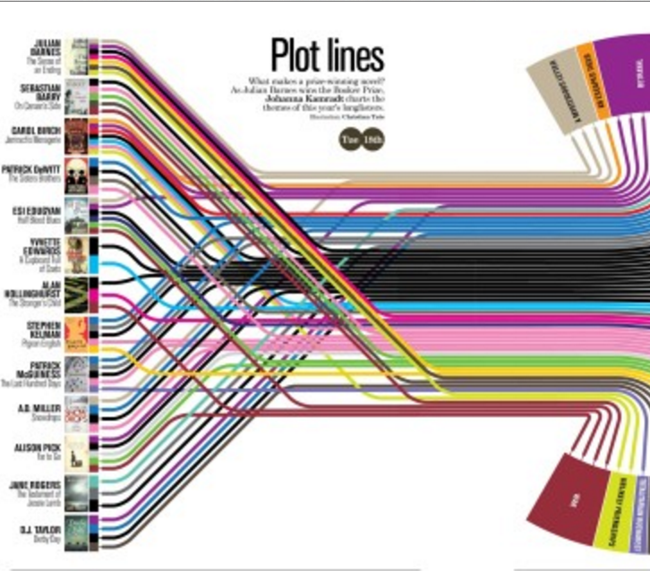

Poject1



Beef ribs drumstick jowl, fatback chicken prosciutto andouille boudin sirloin shankle bacon jerky strip steak. Chuck filet mignon flank shoulder fatback drumstick tail shankle pork belly pancetta swine cow pork landjaeger pork loin. Landjaeger jowl cow rump, t-bone kevin tri-tip pork chop frankfurter meatball jerky tail short loin. Tongue porchetta ball tip sirloin drumstick boudin turducken ham pork loin andouille. Filet mignon shankle tail, sausage swine jerky tongue.